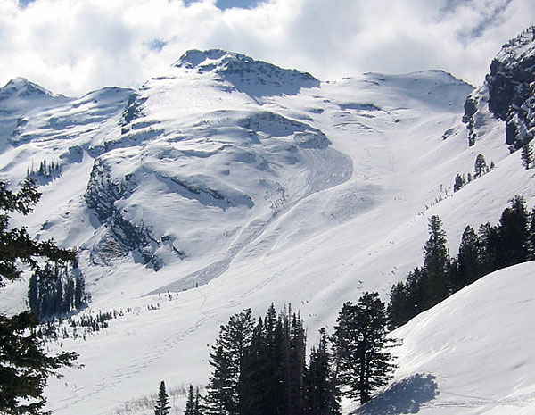

|
Bonkers
It's been two weeks since a decent snowfall,
but today the freak and his team managed to ski one of the best runs
of the year. Bonkers. When you first lay eyes on it you can hear the
clashing of symbols and the yodeling of angels, just like in the movies.
Then you start going up. Then you keep going up. And continue going
up. You reach a saddle and get the amazing view straight down stairs
gultch to Big Cottonwood road 5000 feet or something below you. Then
you continue going up. When you reach the top you look down the run
and think really big and happy thoughs, like "wow!" for example.
If you're lucky, the steeper top 600 feet are covered in deep, soft,
feathery surface hoar crystals.

Bonkers. Gotta love Bonkers. Bonkers. Bonkers.
Bonkers. (photo Prof. Ragdoll)
|